今日趋势
代理榜单里，名次与采购决定之间还有一段距离。新研究汇总运行记录后发现，许多准确率与成本之间的相邻差别，在现有样本上仍难以统计区分；有些成本记录的口径也并不一致。另一篇AdMem论文则从失败开始：一种积累经验的方式，在八类任务中的七类不如没有记忆。两者都给出了具体的比较对象，也都没有证明最便宜或记得最多的方案永远更好。
模型与产品各有新的边界。Qwen4-Max正式版提供托管调用，小尺寸开放权重仍是后续计划；Hy4 flash强调日常任务成本，Liquid d1.2增加结构化决策任务。Google地图可以代查预约，但先在美国推出，展示时段之后仍由人决定订哪一家。商业部分的融资额、账单金额、确认收入和估值拟合，则是几种不能互换的数字。
Google / 官方博客
Google地图代查预约，先在美国上线
来源: Google / 官方博客 · 2026-11-17 · 原文链接
Google为Ask Maps加入行程规划、收藏地点搜索和代查预约。用户可生成逐日路线、分享行程或在桌面端导出到Google Docs，也能按人数和近期空位搜索已收藏的地点。预约功能可在线查找美容、宠物、汽车及家居维修服务，并选择让地图致电商家，展示可用时段后由用户决定预订哪家。官方同时扩展欧洲30国，使Ask Maps覆盖超过200个国家和地区；其中行程与收藏搜索随Ask Maps开放，出发前路线提示和寻找预约先限美国，不能把全球覆盖数字套到所有功能上。
Janet 锐评：
从“附近有什么”走到“附近什么时候有空”，地图开始处理更接近日常安排的问题。真正决定它是否省事的，是时段能否及时更新、商家电话能否接通，以及人能否看清下一步会发生什么。官方把美国先行与全球功能分开说明，这个区别对使用者很实际：看到同一个入口，并不代表所在地区已经能用同一套服务。
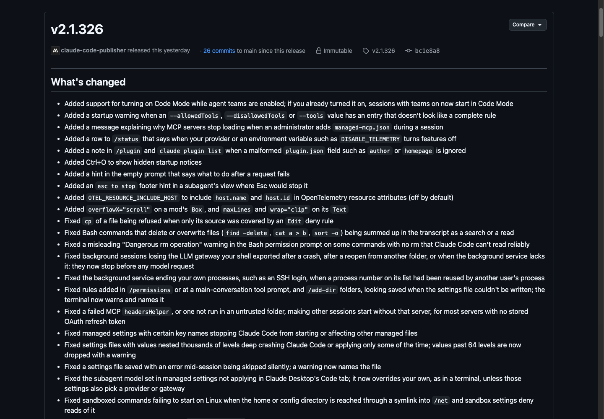
Anthropic / GitHub
ClaudeCode修正误写操作的记录
来源: Anthropic / GitHub · 2026-11-17 · 原文链接
Claude Code发布2.1.326，支持在启用代理团队时开启Code Mode，并补充工具权限规则不完整时的启动提示。版本修正了把删除或覆写文件的部分Bash命令概括成搜索、读取的问题，也修正了权限规则写入失败却看似保存成功的界面表现。后台会话丢失终端指定的模型网关时，现在会在发出模型请求前停止。这些是工具行为、记录与配置处理的修正，不代表模型推理能力同时更新。
Janet 锐评：
操作记录如果把覆盖写成读取，事后复盘就会从错误的起点出发。网关丢失时停下，同样保留了一个明确边界。对需要追踪改动的人，这些细节比运行时看起来顺畅更重要。
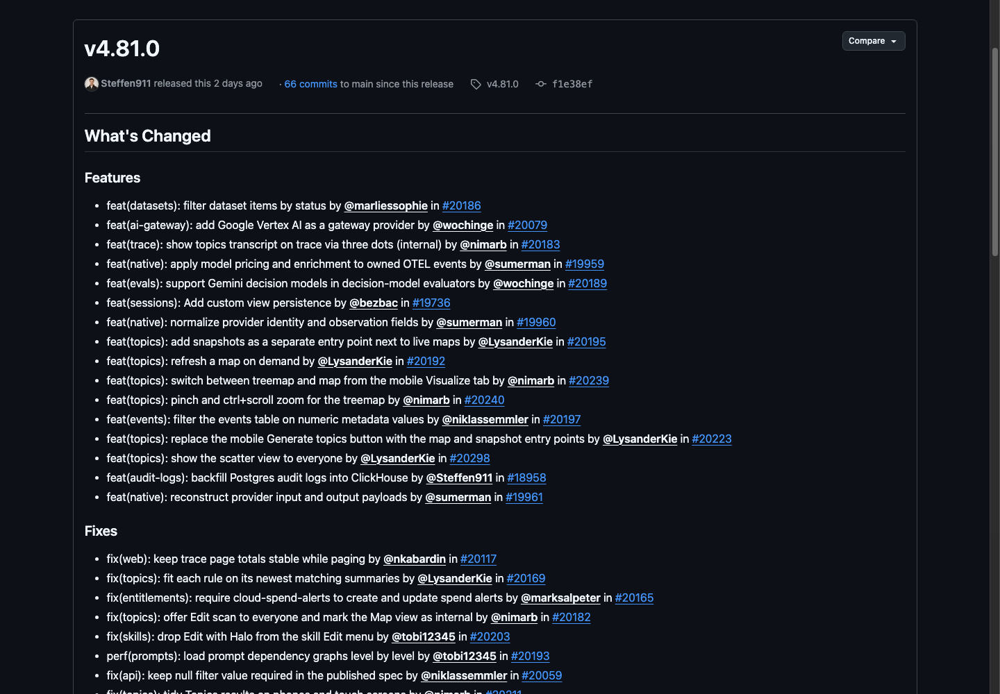
Langfuse / GitHub
Langfuse接入Vertex并扩展评估器
来源: Langfuse / GitHub · 2026-11-17 · 原文链接
Langfuse发布4.81.0，将Google Vertex AI加入AI网关提供方，并为决策模型评估器增加Gemini支持。数据集条目可按状态筛选，会话的自定义视图能够保存；版本也为其接管的OpenTelemetry事件应用模型价格和补充信息，并修正翻页时追踪页总量变化等问题。网关接入、评估器和计价记录分别服务于调用与观察，发行说明没有证明不同提供方的分数和成本已经天然可比。
Janet 锐评：
同一套界面能看见更多调用，方便查问题；比较结论仍取决于数据集状态、计价和评分方式是否一致。把这些条件保存下来，才有机会解释一次分数变化来自哪里。
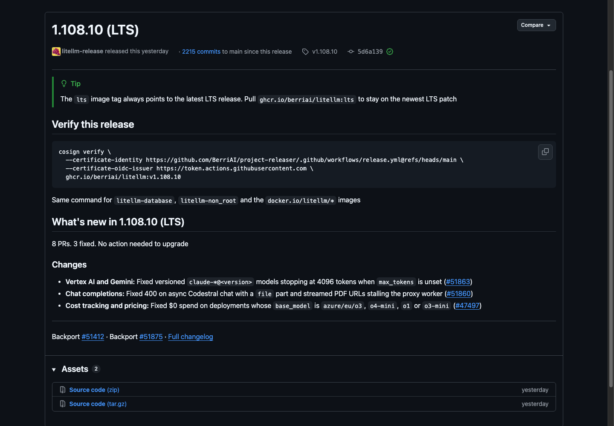
LiteLLM / GitHub
LiteLLM给长期版补上截断与计费修正
来源: LiteLLM / GitHub · 2026-11-17 · 原文链接
LiteLLM发布1.108.10长期支持补丁。版本修正Vertex AI路径中带版本后缀的Claude模型在未设置max_tokens时停在4096词元的问题，也处理异步Codestral聊天含文件部分时报错、流式PDF网址令代理工作进程停滞等情况。对于base_model标为部分Azure欧洲区o系列模型的部署，消费统计错误显示为零的问题也得到修正。这里的零元是记录错误，不是模型供应商宣布免费；补丁说明未要求额外迁移操作。
Janet 锐评：
输出被截断和账面显示免费，都会把一次看似成功的调用变成误判。这个补丁的作用很具体：尽量让结果长度与消费记录回到真实行为，而非提供更低的模型报价。
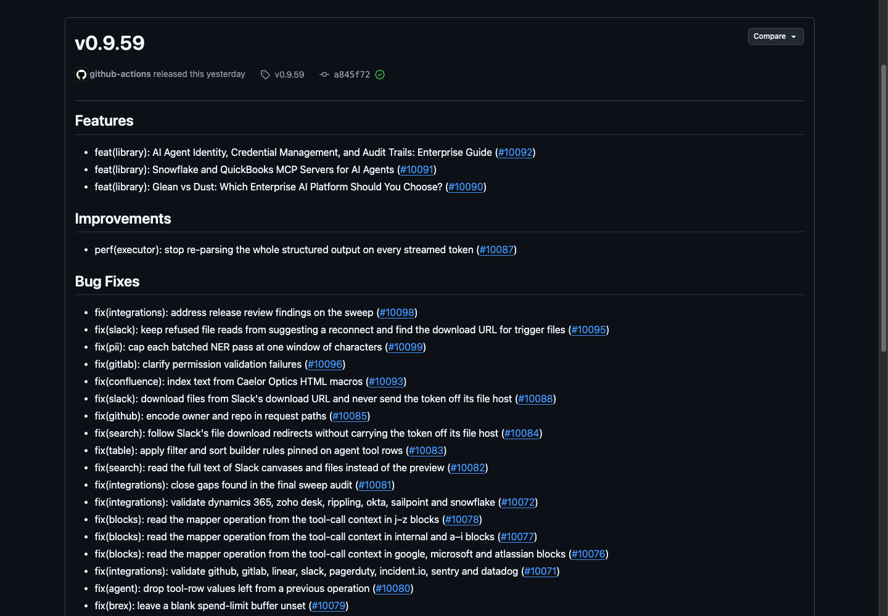
Sim / GitHub
Sim限制Slack文件重定向携带令牌
来源: Sim / GitHub · 2026-11-17 · 原文链接
Sim发布0.9.59，修正Slack文件下载与搜索路径：使用文件下载地址，并在跟随跳转时避免把令牌带出对应文件主机；被拒绝的文件读取也不再轻易提示重新连接。版本还改为读取Slack画布与文件的完整文本，而非只拿预览，并限制批量实体识别的字符窗口和每个工作进程的内存。它们对应文件边界、内容完整性和资源占用，不能据此声称所有连接器已经经过独立安全认证。
Janet 锐评：
预览文本缺一截，助手可能理解错；下载多跟一次跳转，凭据又可能走错地方。两件事发生在同一条资料接入链路上，方便和可靠往往要在这些不起眼的环节一起处理。
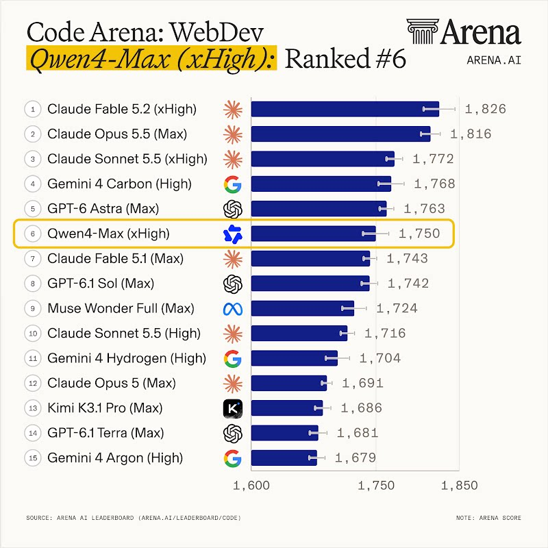
Qwen / 阿里云官方公告
Qwen4Max正式上线，权重尚未开放
来源: Qwen / 阿里云官方公告 · 2026-11-17 · 原文链接
阿里发布Qwen4-Max正式版，与11月已开放的限期预览分开。官方披露其主干约2.4万亿总参数，每个词元激活约710亿参数，原生支持视觉及100万词元上下文；现可经QwenCloud的API和Token Plan等入口调用。官方在自有Work360测试中称，High推理强度下相较Qwen3.8-Max少用35%词元，平均单任务成本降低约60%。这些是特定内部评测口径，不能推成所有业务都会同幅降本；本次正式旗舰采用托管访问，小尺寸模型开放权重仍属后续计划。
Janet 锐评：
总参数、激活参数和一笔任务的费用回答的是不同问题。正式版给了更明确的访问入口，实际账单还要看推理强度、重试与任务长度；“之后开放”也不会自动变成今天可下载的权重。
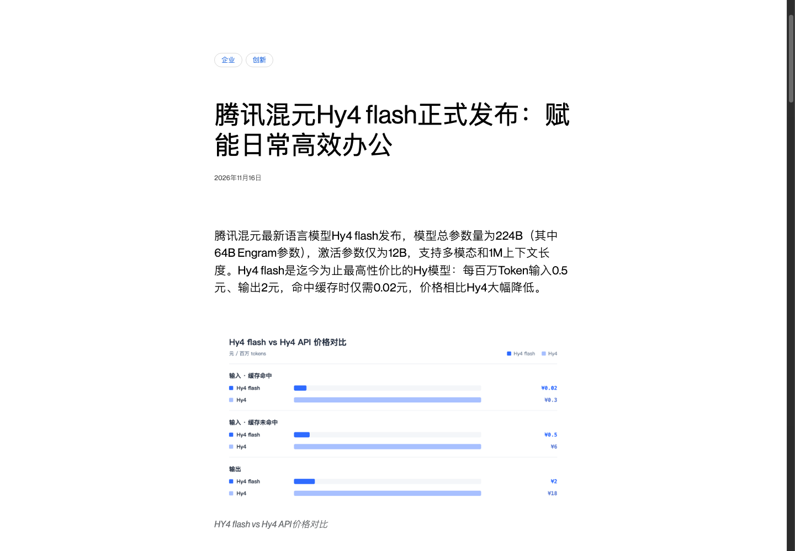
腾讯 / 官方公告
腾讯发布Hy4flash，主打低价日常任务
来源: 腾讯 / 官方公告 · 2026-11-17 · 原文链接
腾讯发布Hy4 flash，官方称总参数2240亿，其中包括640亿Engram参数，活跃参数约120亿，支持多模态输入及最高100万词元上下文。公布的标准价约为每百万输入词元0.070美元、输出0.281美元、缓存输入0.003美元。团队以内测任务说明成本和速度优势，并建议将复杂长程软件工程交给更强的Hy4；内部用户与任务评估不能等同于各行业独立验证。本次先提供产品和云端入口，开放权重仍是官方计划。
Janet 锐评：
低单价会让高频的小任务更容易尝试，但长任务失败后的返工也会消耗预算。腾讯自己区分日常工作与复杂软件工程，比一句笼统的高性价比更接近真实的选择过程。
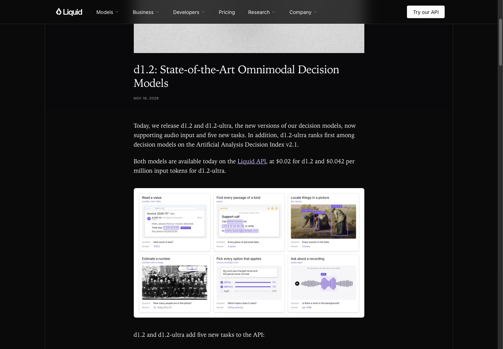
Liquid AI / 官方博客
Liquid决策模型加音频与五类任务
来源: Liquid AI / 官方博客 · 2026-11-17 · 原文链接
Liquid AI发布d1.2和d1.2-ultra决策模型，增加音频输入及五类任务：读取文本、数字或日期，提取文本片段，定位图像对象，估计数字范围，以及多选判断。它们返回结构化结果及相应证据或概率，不是普通聊天长文。官方API分别按每百万输入词元0.02和0.042美元收费，只计输入；公告中的第三方网关接入仍标为即将推出。五类新任务尚无公开基准，文中成绩来自团队用公开数据留出部分建立的内部测试，不能与外部完整评测混为一谈。
Janet 锐评：
带出处的字段和“未找到”结果，适合接在后续程序前面。更丰富的返回类型仍需要处理低置信度和漏检；概率写得精细，并不意味着每一次判断都已经正确。
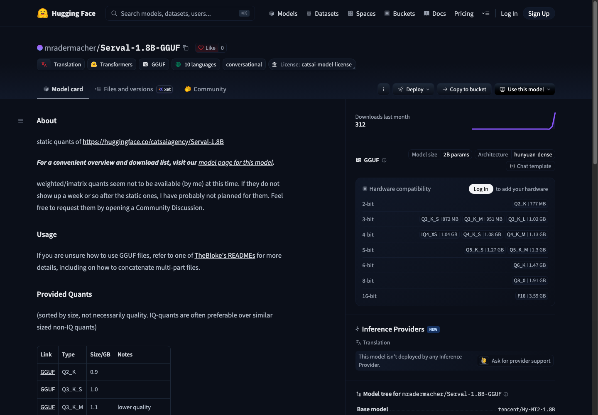
mradermacher / CatsAI · Hugging Face
Serval翻译微调新增GGUF转换
来源: mradermacher / CatsAI · Hugging Face · 2026-11-17 · 原文链接
社区新增Serval-1.8B的GGUF转换，Q4_K_M文件约1.2GB。原模型是CatsAI基于腾讯Hy-MT2-1.8B的独立翻译微调，覆盖日英中韩等10种语言；原作者要求指定源语言，按一句至一段输入，分段之间不共享上下文。其CPU速度和翻译质量属于作者对另一份Q4文件的自报，不能移作这份社区转换的复测结果。模型采用CatsAI定制许可，评估与非商用个人研究等可免费，实际组织业务使用需按机器取得付费许可，不能因上游Apache 2.0或可下载就默认商用免费。
Janet 锐评：
整篇合同切成短段之后，术语和指代未必还能前后一致。Serval的小文件适合做明确边界的翻译试验；真正进入工作时，跨段一致性与逐机器许可都会成为成本的一部分。
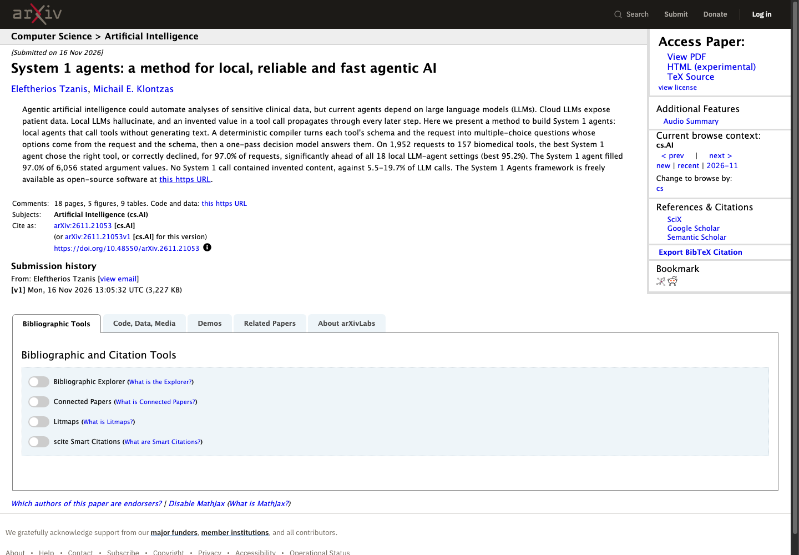
Tzanis、Klontzas / arXiv预印本
新研究用选择题运行本地工具代理
来源: Tzanis、Klontzas / arXiv预印本 · 2026-11-17 · 原文链接
System 1 agents新预印本提出，不让本地语言模型逐字编写工具调用，而由确定性编译器把工具结构和请求转成多选题，再由一次前向决策模型作答。作者在157种生物医学工具、1952个请求中自报，最佳配置正确选工具或拒绝请求的比例为97.0%，比较的18种本地语言模型代理配置最高95.2%；6056个已给定参数值的填写正确率也是97.0%。该测试未出现生成凭空内容的调用，源于答案受请求与结构约束；它仍会选错，不能据此宣布临床决策零风险或所有工具都适用。
Janet 锐评：
把能填写的内容限制在已有选项里，确实能关掉一类凭空编造的出口。但选项本身可能漏掉正确答案，模型也可能在正确选项之间选错。97%的成绩有明确的工具和请求集合，这比“没有幻觉”四个字更有用；如果搬到另一套工具，首先改变的恰恰可能是问题能否被编译成这些选择题。
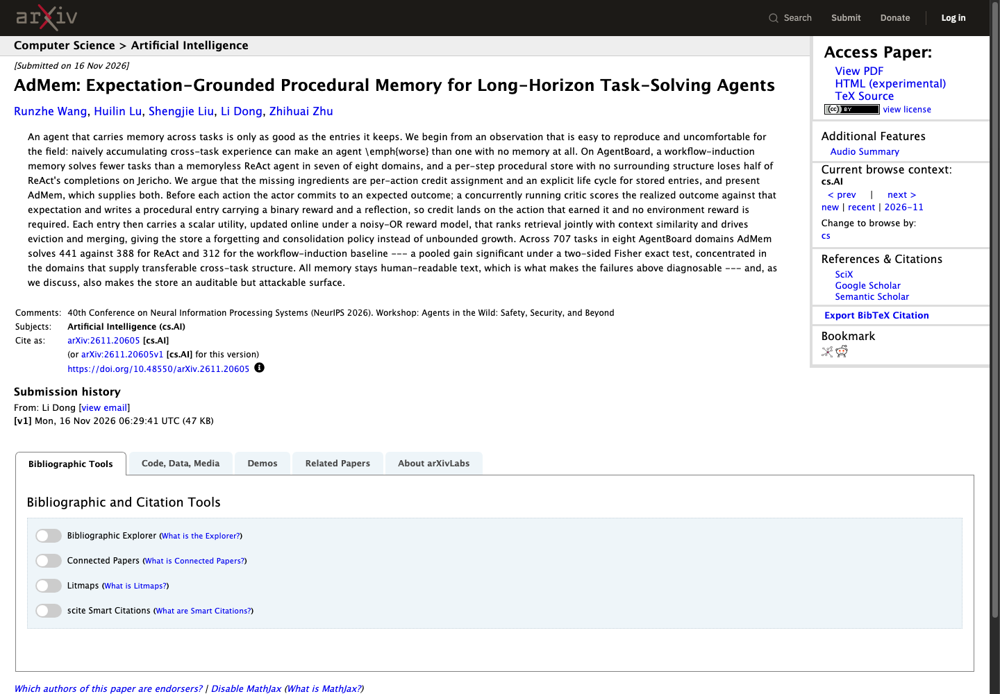
Wang等 / arXiv预印本
AdMem给代理记忆加入淘汰机制
来源: Wang等 / arXiv预印本 · 2026-11-17 · 原文链接
AdMem新论文先报告一个反例：在AgentBoard八类任务中，一种直接积累工作流程经验的记忆方式有七类不如无记忆ReAct代理。新方法让执行者在行动前写下预期，由评判者比较实际结果、分配反馈，再按效用与相似度检索、合并和淘汰文本记忆。作者在707项任务中自报完成441项，无记忆基线为388项、工作流程记忆基线312项，收益主要集中于经验能够跨任务迁移的领域。论文也指出，可阅读的记忆方便排查，却同样构成可能被攻击的输入面。
Janet 锐评：
失败经验如果没有归因和寿命，只会把旧误解越存越牢。AdMem值得讨论的不是给助手一个更大的笔记本，而是哪些记录有资格留下、什么时候应该被忘掉。实验也没有证明所有经验都可迁移：在规则变化或任务差异更大的地方，保留一条曾经正确的做法，依然可能比重新判断更危险。
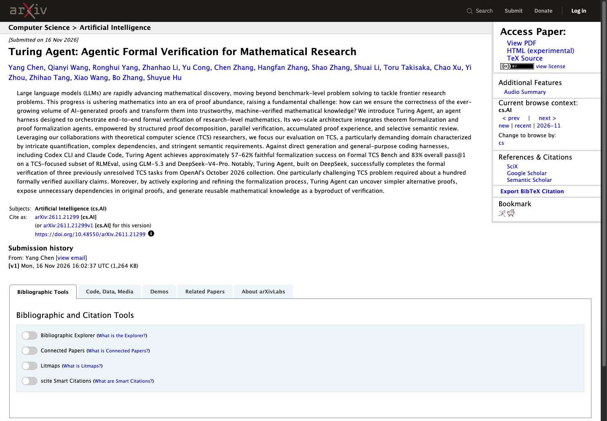
Chen等 / arXiv预印本
TuringAgent用分工验证研究级数学
来源: Chen等 / arXiv预印本 · 2026-11-17 · 原文链接
Turing Agent新预印本提出，把定理形式化与证明形式化分工处理，再结合分解、并行验证和语义复查。作者使用GLM-5.3及DeepSeek-V4-Pro，自报在Formal TCS Bench上忠实形式化成功率约57%至62%，在RLMEval的理论计算机科学子集上整体一次通过率为83%。文中还报告形式化验证了OpenAI十月题集中的三项任务。这里是新发表的系统研究，基础题目较早；形式验证和忠实翻译也不是同一个检查，不能将所有通过结果当作已经证明准确表达了原命题。
Janet 锐评：
机器检查接受一份证明，仍要问它证明的是否就是原来的那句话。把语义复查单独留下，是这项工作重要的边界；研究级数学里，量词和前提改一点，问题就可能已经换了。
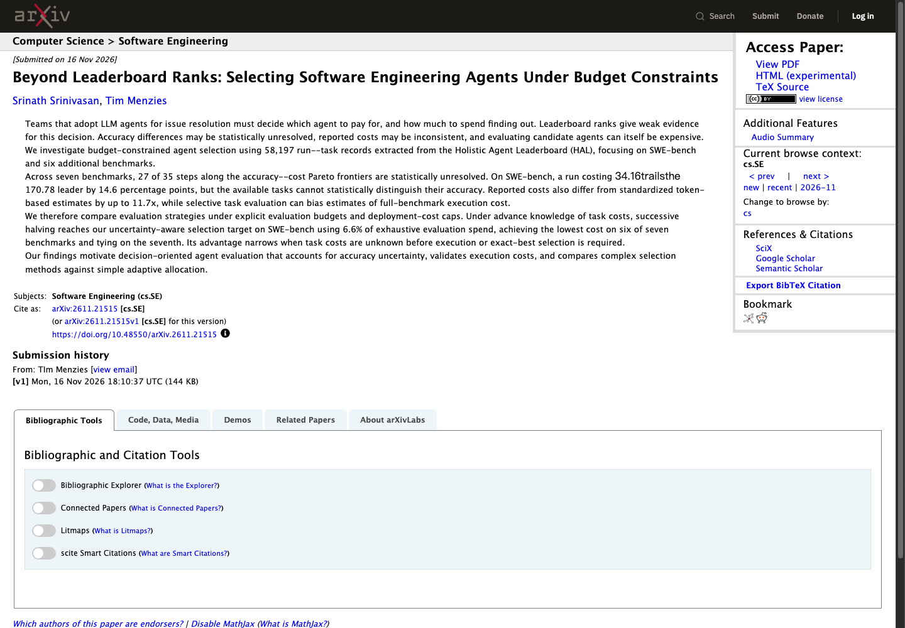
Srinivasan、Menzies / arXiv预印本
代理选型研究发现成本口径可差11.7倍
来源: Srinivasan、Menzies / arXiv预印本 · 2026-11-17 · 原文链接
一篇软件代理选型预印本分析HAL榜单中的58197条运行与任务记录，覆盖SWE-bench及另外六个基准。作者报告，准确率与成本前沿的35个相邻比较中有27个在统计上仍难区分；记录成本与统一按词元估算的金额最多相差11.7倍。SWE-bench中，一次34.16美元的运行比170.78美元榜首低14.6个百分点，但现有任务样本未能统计区分其准确率。这不证明二者等效。逐步减半分配评估预算，在预先知道任务成本等条件下可省测试费用；未知成本或要求选出精确第一名时，优势会缩小。
Janet 锐评：
采购决定常常落在一张排名表之后，却要支付表里没有统一说明的费用。低14.6个百分点仍未达到统计可区分，说明证据不足，不说明差距消失；反过来，更贵的第一名也没有因此自动值得买。把成本口径、样本不确定性和评估本身的花费放到同一张账里，才知道预算究竟买到了能力，还是只买到了一个更靠前的名次。
投资与商业
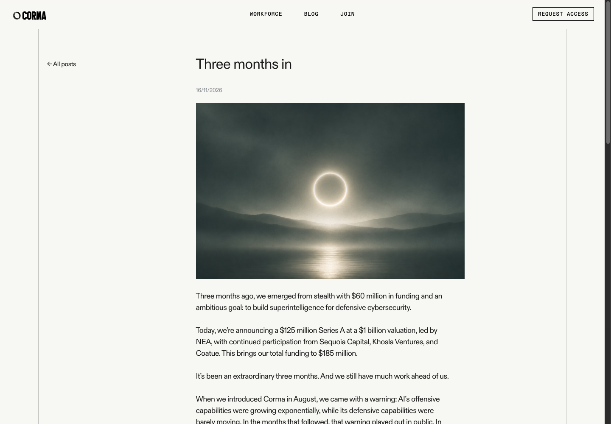
Corma / 公司公告
Corma融资1.25亿美元扩防御模型
来源: Corma / 公司公告 · 2026-11-17 · 原文链接
Corma宣布完成1.25亿美元A轮融资、估值10亿美元，由NEA领投，Sequoia、Khosla Ventures和Coatue继续参与；连同此前6000万美元，公司披露累计融资1.85亿美元。资金计划用于扩展防御性网络安全基础模型、算力与团队。公司称计算容量是满足需求的限制，并保留候补名单，但公告没有提供可独立核对的客户收入、攻击阻断率或节约工时。本次融资已经宣布，下一代模型仍属于后续计划。
Janet 锐评：
融资给了扩充算力的资源，防御效果还得回到具体事件里衡量。企业安全团队承担的是漏报、误报和处理时延，估值增长不能替这些结果作证。
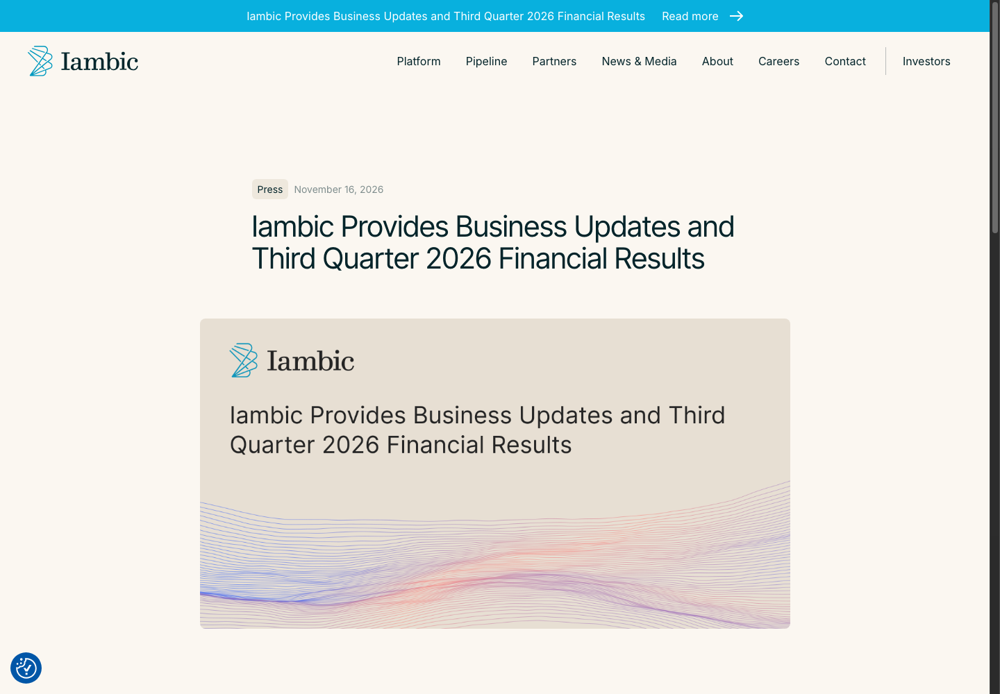
Iambic / 公司财报，经GlobeNewswire
Iambic发布新财报，账单不等于收入
来源: Iambic / 公司财报，经GlobeNewswire · 2026-11-17 · 原文链接
Iambic在11月16日公布三季度财报：当季合作收入1140万美元，上年同期470万美元，净亏损3850万美元。前三季度合作收入约2400万美元，合作账单金额约1亿美元，总运营费用约1.08亿美元，算力相关成本不足1000万美元。公司将账单金额定义为合作收入加递延收入变化，不能当成同额已确认收入。公告回顾的Enchant v3发布、合作签约和IPO均较早，本期的新信息是财务披露；这些数字也不代表药物疗效或临床成功已经得到证明。
Janet 锐评：
同样围绕AI研发，一亿美元账单与2400万美元收入可以同时成立，因为它们记录的是不同阶段。实验、临床和算力又有各自的成本周期，单看大额合作就判断公司已经赚钱，会跳过中间很长一段路。
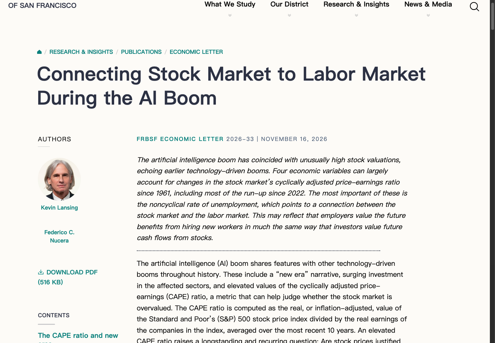
Lansing、Nucera / 旧金山联储经济简报
旧金山联储新分析把估值连到就业
来源: Lansing、Nucera / 旧金山联储经济简报 · 2026-11-17 · 原文链接
旧金山联储新经济简报用1961年至2026年第三季度数据，分析股票周期调整市盈率与中性实际利率、潜在产出增长、非周期失业率及宏观不确定性的关系。作者模型解释样本内CAPE波动方差约89%，去掉失业率变量后约为49%；第三季度实际CAPE为40.5，含该变量的拟合值为35.8。文章强调，历史拟合好并不保证当前估值能够持续，关系也可能改变。这是当天首次发表的宏观分析，基础数据来自较早时期，不是联储对未来股价作出的保证或投资建议。
Janet 锐评：
把就业放回估值讨论，会看到企业对雇人的收益预期与投资者对现金流的预期可能相连。但一条能贴合历史的曲线，仍不等于未来价格的地板。作者删掉一个变量，拟合结果就明显变化，这个敏感性比89%的数字本身更值得记住；它提醒我们，同一轮AI热潮可以有不同解释，模型的选择也参与塑造了结论。